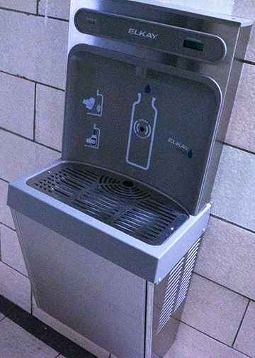
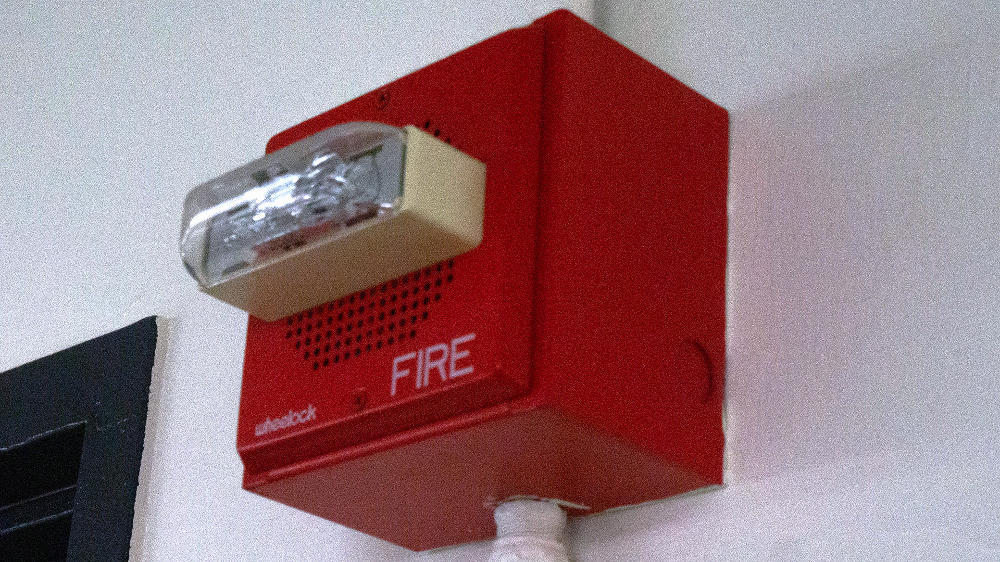

Cropped and resized to a 5x7 aspect ratio, balancing the tonal range across the metallic surfaces and tiled wall.

Cropped and resized to 1920x1080 HD widescreen dimensions, emphasizing contrast and color tones between the red alarm housing and white wall.